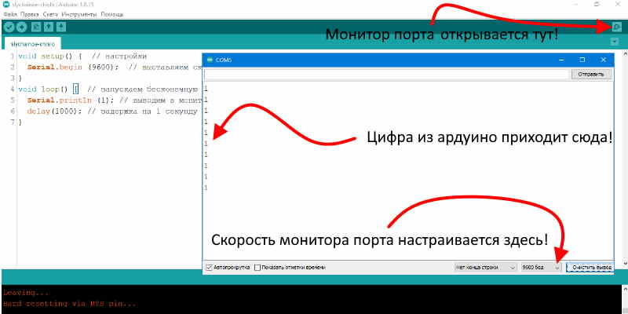

Здесь расположены небольшие скетчи (прошивки) для ардуино для быстрой проверки различных плат и пр.
Здесь расположены небольшие скетчи (прошивки) для ардуино для быстрой проверки различных плат и пр.
Популярный Blink для могргания светодиодом встроенным в плату, некоторые считают что моргание нечто примитивное, но как вам такое весь интернет это могание светодиодом, предача 0 и 1 !
void setup() { // функция настроек и разового ввода данных
pinMode(13, OUTPUT); // Пин 13 настраиваем на выход
}
void loop() { // Функция бесконечного цикла
digitalWrite(13, 1); // На пине 13 к которому подключен светодиод устанавливаем 1 это +5 вольт
delay(1000); // ждем 1000 милисекунд - 1секунду
digitalWrite(13, 0); // На пине 13 к которому подключен светодиод устанавливаем 0 это 0 вольт
delay(1000); // ждем 1000 милисекунд - 1секунду
}

Эта прошивка будет работать с монитором порта. Монитор порта это удобное окошко для наблюдения что происходит в микроконтроллере, давайте в него что нибудь выведем например цифру "1". Для этого в скетче в настройках необходимо выставить скорость порта "Serial.begin (9600);", далее в цикле выводим нашу еденицу в монитор порта "Serial.println (1);" и ждем 1 секунду "delay(1000);" для того что вывод был не сильно быстрым ;) и так по кругу бесконечно. Так же как на картинке нажмите на открытие монитора порта и выставите скорость если необходимо иначе ничего не увидим или будут кракозяблы типа %%???№№№. Обязательно поменяйте цифры в скобках на любые свои, а если хотите вывести текст то в скобках надо поставить кавычки вот так "Serial.println("Привет!");"
void setup() { // настройки
Serial.begin (9600); // выставляем скорость на порту
}
void loop() { // запускаем бесконечную обработку кода (цикл)
Serial.println (1); // выводим в монитор порта цифру и переводим строку
delay(1000); // задержка на 1 секунду
}

Монитор порта может работать не только на прием но и на отправку. В этом скетче мы будем включать светодиод на плате отправляя цифру "1" на плату ардуино через монитор порта. В "if (Serial.parseInt() == 1)" мы проверяем пришло ли сообщение из монитора порта если оно пришло то сравниваем с условием в скобках если наше пришедшее число такоеже то выполняем все что находится в фигурных скобках { вот тут } в скетче мы включаем светодиод на плате далее ждем секунду и выключаем. Такая функция монитора порта очень полезна например у нас нет кнопки но мы хотим что либо запустить с помощью ардуино пишем эти пару строк и таким образом создаем виртуальную кнопку.
void setup() { // функция настроек и разового ввода данных
Serial.begin(9600); // выставляем скорость на порту
pinMode(13, OUTPUT); // Пин 13 настраиваем на выход
}
void loop() { // запускаем бесконечную обработку кода (цикл)
if (Serial.parseInt() == 1) { // Если (Число из монитора порта = 1) то выполняем команды до конца скобки
digitalWrite(13, 1); // На пине 13 к которому подключен светодиод устанавливаем 1 это +5 вольт
delay(1000); // ждем 1000 милисекунд - 1секунду
digitalWrite(13, 0); // На пине 13 к которому подключен светодиод устанавливаем 0 это 0 вольт
} // команды из if выполняются до этой скобки
}